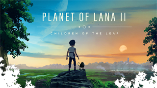

RuneScape: Dragonwilds
Disponível em 15 de setembro de 2026.
RuneScape: Dragonwilds é um dos jogos adicionados ao catálogo do Xbox Game Pass em setembro de 2026.
Plataformas: Cloud, Xbox Series X|S e PC.
Conheça alguns dos novos jogos disponíveis no Xbox Game Pass.
O Xbox Game Pass recebeu novos jogos em setembro de 2026. Entre os títulos estão RuneScape: Dragonwilds, Marvel Cosmic Invasion, Planet of Lana II, Routine, Kernel Hearts e Ninja Gaiden 4.
Os lançamentos estão disponíveis em diferentes plataformas, incluindo Xbox Series X|S, PC e Cloud Gaming.
Disponível em 15 de setembro de 2026.
RuneScape: Dragonwilds é um dos jogos adicionados ao catálogo do Xbox Game Pass em setembro de 2026.
Plataformas: Cloud, Xbox Series X|S e PC.
Disponível em 16 de setembro de 2026.
Marvel Cosmic Invasion também faz parte dos novos jogos disponíveis no Xbox Game Pass.
Plataformas: Cloud, Xbox Series X|S, portátil e PC.

Disponível em 16 de setembro de 2026.
Planet of Lana II está entre os lançamentos recentes adicionados ao serviço Xbox Game Pass.
Plataformas: Cloud, Xbox Series X|S, portátil e PC.
Disponível em 16 de setembro de 2026.
Routine é outro título que chegou ao catálogo do Xbox Game Pass em setembro de 2026.
Plataformas: Cloud, console, portátil e PC.

Disponível em 17 de setembro de 2026.
Kernel Hearts faz parte da nova seleção de jogos disponíveis para assinantes do Xbox Game Pass.
Plataformas: Cloud, Xbox Series X|S e PC.
Disponível em 17 de setembro de 2026.
Ninja Gaiden 4 também está entre os jogos adicionados ao Xbox Game Pass em setembro de 2026.
Plataformas: Cloud, Xbox Series X|S, portátil e PC.